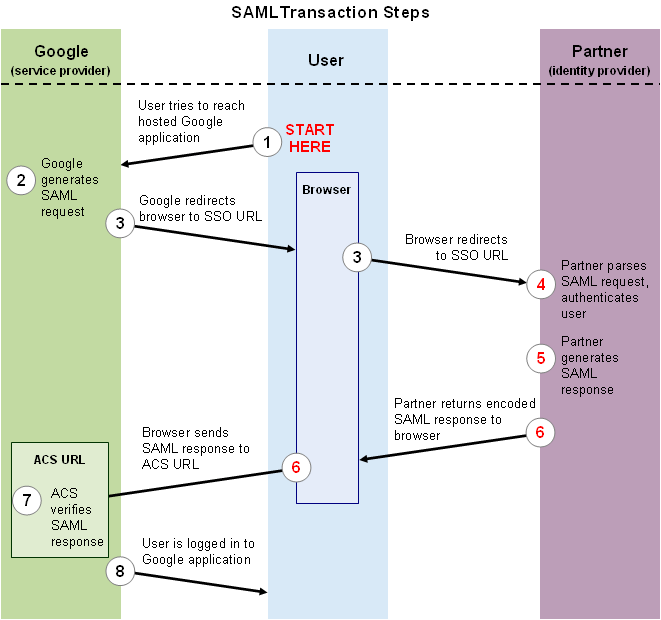
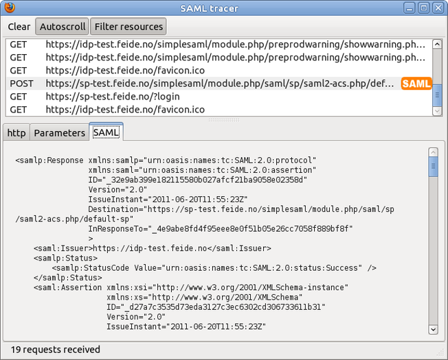
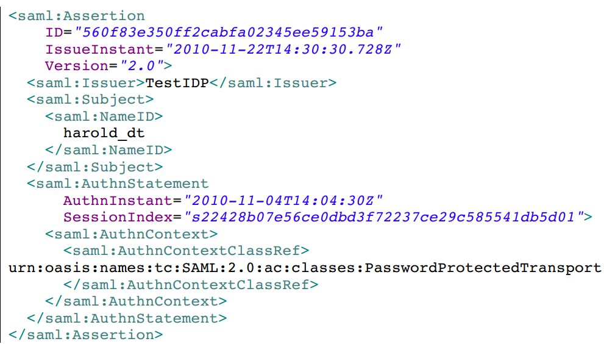
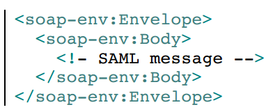
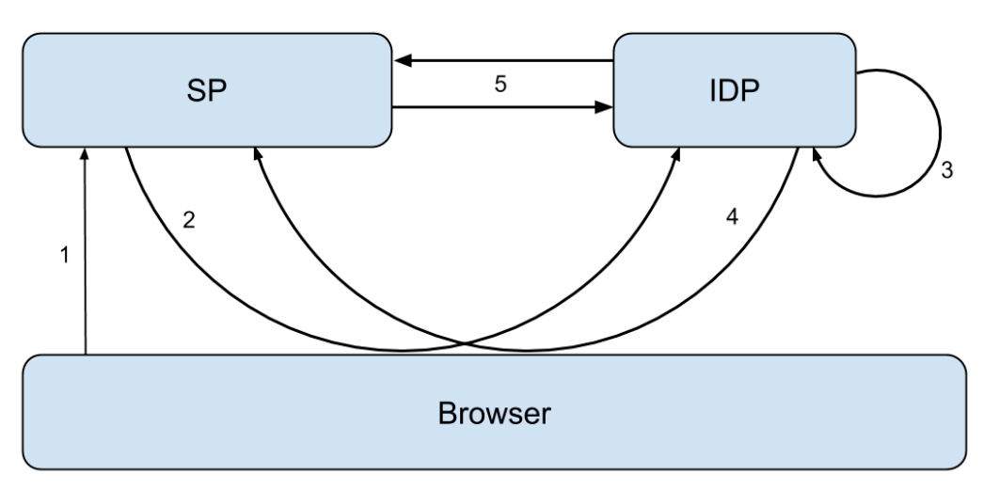

SAML2.0 指南
Table of Contents
SAML 全称为 Security Assertion Markup Language ，是一种用于 安全性断言 的 标记语言 ，目前的最新版本是 2.0
入门
SAML在单点登录中大有用处：在SAML协议中，一旦用户身份被主网站（ 身份鉴别服务器 ，Identity Provider，IDP）认证过后，该用户再去访问其他在主站注册过的应用（ 服务提供者 Service Providers，SP）时，都可以直接登录，而不用再输入身份和口令
SAML协议的核心是: IDP和SP通过用户的浏览器的重定向访问来实现交换数据
- SP 向 IDP 发出 SAML身份认证请求消息 ，来请求IDP鉴别用户身份
- IDP 向 用户 索要 用户名和口令 ，并验证其是否正确
- 如果 验证无误 ，则向 SP 返回 SAML身份认证应答 ，表示该用户已经登录成功了
- 应答中里还包括一些额外的信息，来 确保 应答 未被篡改和伪造
实例
下面以用户登录SP，SP向IDP发起请求来确认用户身份为例子，看看SAML的工作流程
比如 SP是Google的Apps，IDP是一所大学的身份服务器，Alice是该大学的一名学生

现在Alice要通过浏览器查阅她的邮件，Alice一般会通过浏览器访问一个网页，比如https://mail.google.com/a/my-university.nl 。因为这是个联合身份域，所以Google不会向用户索要用户名和密码，而是将其从定向到IDP来认证其身份。用户被重定向的URL类似于这种：
https://idp.uni.nl/sso?SAMLRequest=fVLLTuswEN0j8Q…c%3D
嵌入到HTTP请求中的SAML Request就是 SAML认证请求消息 。在压缩和编码之前，SAML消息有如下格式：
<AuthnRequest ID="kfcn...lfki" Version="2.0" IssueInstant="2013-02-05T08:28:50Z" ProtocolBinding="urn:oasis:names:tc:SAML:2.0:bindings:HTTP-POST" ProviderName="google.com" AssertionConsumerServiceURL="https://www.google.com/a/uni.nl/acs"> <Issuer>google.com</Issuer> <NameIDPolicy AllowCreate="true" Format="urn:oasis:names:tc:SAML:1.1:nameid-format:unspecified"/> </AuthnRequest>
上面的内容用最直白的方式解释出来就是：这个来自Google的请求，请验证当前用户的身份，并将结果返回
因为SAML是基于XML的，通常比较长，所以完整认证请求消息要经过压缩（为Url节省空间）和编码（防止特殊字符）才能传输
当 IDP 收到消息并 确认要接受认证请求 之后，就会要求Alice输入用户名和口令来验证其身份
如果Alice已经登录过了，就会跳过该步骤
当验证通过之后，Alice的浏览器将会跳转回Google的特定页面（ AssertionConsumerService ，简称ACS） SAML身份认证响应的内容也是在压缩并编码后以参数的形式传输。在压缩和编码之前，其结构类如下：
<Response Version="2.0" IssueInstant="2013-02-05T08:29:00Z" Destination="https://www.google.com/a/my.uni.nl/acs" InResponseTo="kfcn...lfki"> <Issuer>https://idp.uni.nl/</Issuer> <Status> <StatusCode Value="urn:oasis:names:tc:SAML:2.0:status:Success"/> </Status> <Assertion Version="2.0" IssueInstant="2013-02-05T08:29:00Z"> <Issuer>https://idp.uni.nl/</Issuer> <Subject> <NameID>alice</NameID> <SubjectConfirmation ...> <SubjectConfirmationData NotOnOrAfter="2013-02-05T08:34:00Z" Recipient="https://www.google.com/a/my.uni.nl/acs" InResponseTo="kfcn...lfki"/> </SubjectConfirmation> </Subject> <Conditions NotBefore="2013-02-05T08:28:30Z" NotOnOrAfter="2013-02-05T08:34:00Z"> </Conditions> <AuthnStatement AuthnInstant="2013-02-05T08:29:00Z" SessionNotOnOrAfter="2013-02-05T16:29:00Z> </AuthnStatement> </Assertion> </Response>
虽然内容很多，但是其主要表达的是：该消息来自idp.uni.nl，名为Alice用户的身份已经被我验证，该消息的有效期为2分钟
此外，重定向的URL中还要有该消息的签名以保证其不备篡改，验证签名的公钥和算法，都是IDP和SP提前协商好的
当Google接受到SAML认证响应之后：
- 首先验证消息的签名是否正确以及是否因超时而失效
- 再从认证消息中提取出Google能识别用户身份（NameID，即Alice）
如果以上的步骤都是顺利的，用户将会成功登陆Google
工具
如果想要去看看真实的SAML信息，建议推荐使用火狐浏览器的插件工具 SAML tracer 。该插件将会在浏览器中添加一个窗口来显示SAML消息，以下是截图：

OpenSAML
OpenSAML是一个便于使用 SAML消息 的 工具库 ，其提供的主要功能包括：
- 创建SAML消息
- 解析SAML对象并导出为XML格式
- 签名和加密
- 对SAML消息进行编码并传输
目前OpenSAML库提供Java和C++实现的版本 需要注意的是OpenSAML虽然多应用用于SSO（单点登录）的开发中，但是该库本身不提供任何身份识别和授权的功能，其只是实现对于SAML消息的相关操作而已
协议
SAML是一种 XML框架 用来 交换 安全信息 ，其中定义了按照安全规范所需要的通信的协议和格式。SAML是一种 中心化的认证机制 ，其定义了两种实体相互通信：
- Service Provider( SP ): 向用户提供正式商业服务的实体，通常需要认证一个用户的身份
- Identity Provider( IDP ): 提供用户的身份鉴别，确保用户是其所声明的身份
用途
SAML的重要用途：
- 单点登录（SSO Single Sign-ON）
- 联合认证（Federated Identity）
- 在其他架构内使用SAML，比如WS-Security
定义
Assertions
断言 是在SAML中用来描述 认证的对象 ，其中包括一个用户在什么时间、以什么方式被认证，同时还可以包括一些扩展信息，比如用户的Email地址和电话等等：

断言即信息
Protocol
协议 规定如何执行不同的 行为 。这些 行为 被细化成一系列的 Request 和 Response 对象，而在这些请求和相应的对象中包含了行为所特别需要的信息。比如， 认证请求协议 （AuthnRequest Protocol）就规定了一个SP如何请求去获得一个被认证的与用户：
<saml2p:AuthnRequest AssertionConsumerServiceURL=http://localhost:8080/webprofile-refproject/sp/consumer Destination="http://localhost:8080/webprofile-refproject/idp/singleSignOnService" ID="_52c9839568ff2e5a10456dfefaad0555" IssueInstant="2014-05-13T17:34:37.810Z" ProtocolBinding="urn:oasis:names:tc:SAML:2.0:bindings:HTTPArtifact" Version="2.0"> <saml2:Issuer> TestSP </saml2:Issuer> <saml2p:NameID PolicyAllowCreate="true" Format="urn:oasis:names:tc:SAML:2.0:nameid-format:transient"/> <saml2p:RequestedAuthnContext Comparison="minimum"> <saml2:AuthnContextClassRef> urn:oasis:names:tc:SAML:2.0:ac:classes:Password </saml2:AuthnContextClassRef> </saml2p:RequestedAuthnContext> </saml2p:AuthnRequest>
协议即通信
Binding
绑定 定义了SAML信息如何使用 通信协议 被 传输 的。比如：
- HTTP重定向绑定，即声明SAML信息将通过HTTP重定向消息传输
SAML SOAP绑定，声明了通过SOAP来传递SAML消息

绑定即传输
Profiles
配置 定义了如何 组织以上信息 ，并且在一个更高的层次上描述断言，协议和绑定如何被使用去解决一个具体情况。比如Web浏览器的SSO配置就描述了如何一个用户使用浏览器被认证
配置即综合
MetaData
SAML的 元数据 是 配置数据 ，其包含关于SAML通信各方的信息，比如通信另一方的 ID 、Web Service的 IP地址 、所支持的 绑定类型 以及通信中使用的 密钥 等等
OpenSaml中提供了metadata provider来帮助构建和解读元数据
流程
通过HTTP协议绑定来实现SSO：

用户尝试获得权限
首先从一个非认证的用户开始，该用户尝试从一个受保护的SP那里获得访问权限。某种方式的过滤器被设置在访问路径上来检测用户是否被授权
J2ee中servlet类就是一个很好地例子 这一部分其实并不是SAML协议里的内容，但是却决定了是否要被授权
用户被重定向到IDP
当访问路径上被设置的过滤器发现用户并非是被认证的，将会自动把用户从定向到IDP，以求验证用户的身份
用户被认证
在这一步里，用户被认证。注意这里并没任何涉及到SP的交互，在安全方式内，IDP对于认证用户有着全权责任
已认证的用户被重定向回SP
当用户被认证成功之后，用户会携带着 SAML产物 （SAML artifact）被重定向回SP
这样的SAML产物也可以说是认证信息的标识，因为认证信息中有敏感的信息不能直接通过浏览器传输，所以这里只是发送标识而已
要求认证信息
当收到SAML产物之后，SP将其发送回IDP，IDP依据 SAML产物 找到 认证信息 ，并通过 SAML产物响应 (SAML Artifact Response)发送回SP
上面提到的“SAML产物响应”中就包含“SAML断言”，它就是认证的证据，断言中最重要的数据就该用户“什么时候”以“什么方式”被认证的